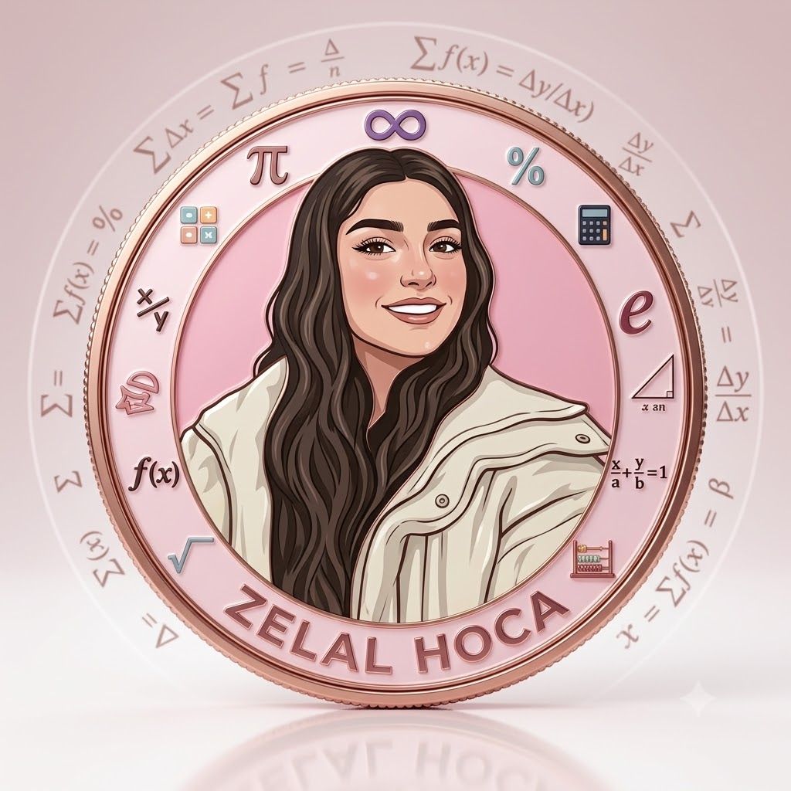

Ezberci sistemden uzak, mantığını kavratan ve yeni nesil sorulara yönelik kişiselleştirilmiş matematik dersleri.

Çocukluk yıllarımdan bu yana matematiğe duyduğum büyük tutkuyu, şimdi öğrencilerimle paylaşıyorum. İlkokul ve ortaokul düzeyindeki öğrencilerime özel dersler vererek onların başarılarına ortak oluyorum.
Amacım matematiği korkulan bir ders olmaktan çıkarıp, anlaşılan ve sevilen bir alan haline getirmektir. Birebir ilgi, modern eğitim yaklaşımları ve samimi bir iletişimle her öğrencinin potansiyelini en üst düzeye çıkarmayı hedefliyorum.
Yeni nesil soru tiplerine alışma, mantık-muhakeme yeteneğini geliştirme ve sınav stratejileri üzerine yoğunlaştırılmış çalışmalar.
Okul müfredatına tam uyumlu, yazılı sınavlara hazırlık ve temel matematik altyapısını sağlamlaştıran birebir dersler.
Öğrencinin ve ailenin tercihine göre, interaktif materyallerle desteklenmiş online veya birebir yüz yüze ders imkanı.
Öğrencilerin takıldığı sorularda ders saatini beklemeden, anlaşılır ve detaylı videolu soru çözüm desteği.
Öğrencinin matematik altyapısını analiz ederek, hedefe ve ihtiyaca yönelik en uygun ders programını (online/yüz yüze) oluşturma.
Ezberden uzak, mantığı kavratan metotlarla konunun işlenmesi ve yeni nesil soru pratiklerinin yapılması.
Ders dışı zamanlarda ödevlendirme, yapılamayan sorular için videolu çözüm desteği ve düzenli gelişim takibi.